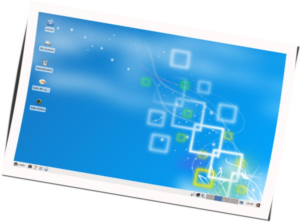

Salix is a Linux Distribution based on Slackware that retains full backwards compatibility with its illustrious parent. However, while the KISS principle that Slackware adheres to refers to the viewpoint of system design, Salix also applies it to the viewpoint of the end user.